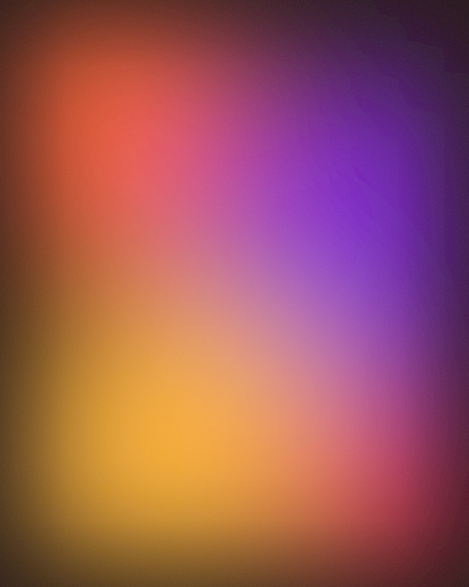

Generated once
- A typo means a round-trip to the model.
- Every regeneration reshuffles what was fine.
- The file is too big to diff or trust.
Internal tooling 2026
Contents
01
Section
The core failure
You can't fix a typo without going back to the model. So nobody uses it twice.
01 The fix

02 Architecture
The navigation, overview, edit mode and export live in a fixed runtime.js that ships with the skill. Claude never rewrites it.
Every generated deck is therefore just semantic markup plus a theme file — small to produce, cheap to revise, identical in behaviour.
runtime.js · 380 lines · written once03 Layouts
Twenty layout classes — from title, split and stats to bento, timeline, callout and full-bleed.
A theme is nine CSS variables. Brand it once, reuse it across every deck you generate.
The only thing the model writes. Small, diffable, and safe to hand-edit later.
03 Layouts
The wide cell carries the point. The others orbit it — a stat, a note, an accent.
20
layouts in the library.
Cells inherit the theme.
Every cell is plain markup.
One tile gets to shout.
04 Economics
~9
CSS variables define a complete brand theme.
20
Layout classes cover the shape of almost any talk.
0
Lines of JavaScript regenerated per deck.
04 Economics
~3,000
tokens to hand a finished deck back to Claude for a revision pass.
05
Section
05 Try it now — press E
06 Persistence
A browser file picker can't hand you a real path, so the usual answer is inlining every image as base64 — a 2 MB photo becomes 2.7 MB of text.
Instead the runtime asks for the deck's folder once via the File System Access API, writes new images into images/, and keeps the markup pointing at relative paths.
Anatomy
<section class="slide slide--split">
<figure class="media split__media">
<img src="images/roadmap.png" alt="">
</figure>
<div class="split__body">
<p class="eyebrow"><b>Q3</b> Roadmap</p>
<h2 class="h1">Ship the thing.</h2>
<p class="body">Then ship it again, smaller.</p>
</div>
</section>
07 Export
Chrome → Print → margins None, background graphics on. One slide per landscape page, fonts and gradients intact.
07 Images
slide--image · no chrome, no text, just the picture
07 For design reviews
The deck you can't edit is a screenshot with extra steps.
08 Scope
08 Roadmap
Now
Runtime, layouts, three themes.
Next
Point it at a site, get a theme.
Then
A directory of images becomes slides.
Later
Annotate screens, not just talks.
Fin
Then press O for the overview, T to reskin the whole deck, P to make a PDF.